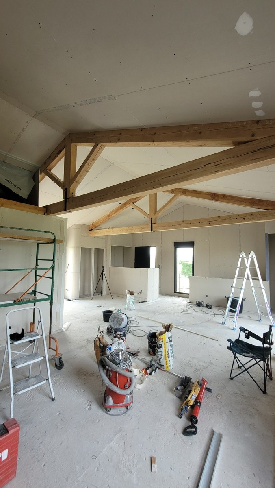
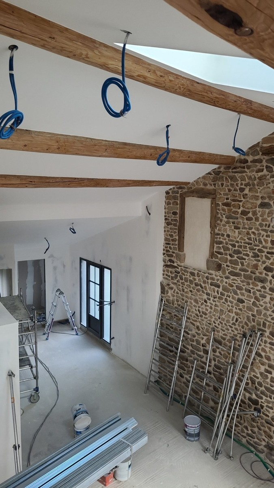

Plaquiste à Saint-Étienne : placo & plâtrerie
Cloisons, doublages, faux plafonds, bandes à joints, réparations de placo et préparation des supports avant peinture.
Travaux de plâtrerie et de plaquiste
Un support correctement réalisé facilite les étapes suivantes : bandes, enduits, ratissage, ponçage et mise en peinture.
Photos de chantier : placo et préparation
Photos réelles de pose de plaques de plâtre et de préparation des supports.
{kind=link}

{kind=link}

Du placo à la finition
Lorsque le chantier comprend aussi une remise en peinture, la préparation peut se poursuivre avec les enduits, le ratissage, le ponçage et l’impression.
Envoyez quelques photos
Indiquez la commune, les dimensions approximatives, la nature du projet et l’état du support.
Avant un chantier de placo
Intervenez-vous pour une petite réparation de placo ?
Oui, selon la nature de la reprise. Des photos permettent souvent de déterminer si une visite est nécessaire avant chiffrage.
Pouvez-vous faire les bandes à joints après la pose du placo ?
Oui. Les bandes à joints, les enduits et leur finition font partie des prestations proposées avant peinture.
Faut-il prévoir un ratissage après le placo ?
Pas systématiquement. Le besoin dépend de l’état général du support et du niveau de finition attendu.
Peut-on créer une cloison et faire la peinture ensuite avec le même artisan ?
Oui, lorsque le chantier le prévoit, les travaux peuvent enchaîner placo, bandes, préparation et peinture.
Quelles informations sont utiles pour le devis ?
La commune, les dimensions, le type de pièce, la nature du projet et quelques photos permettent de préparer un échange plus précis.